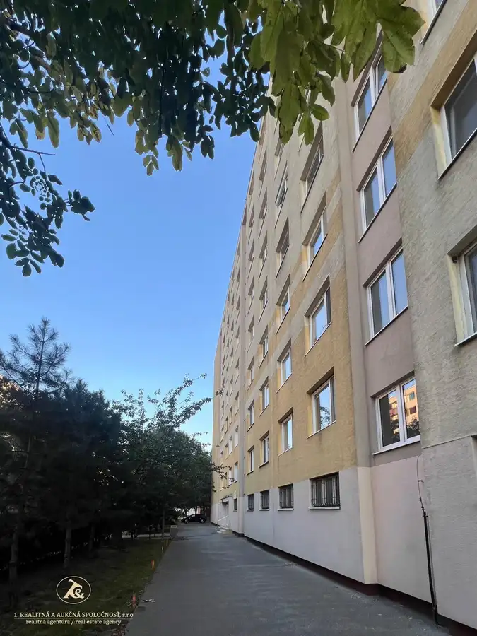
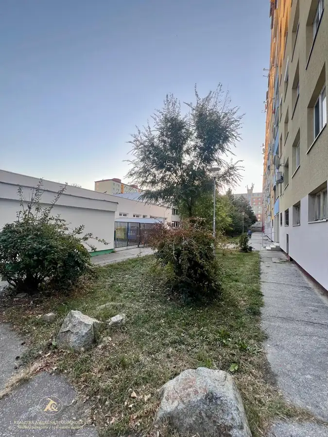
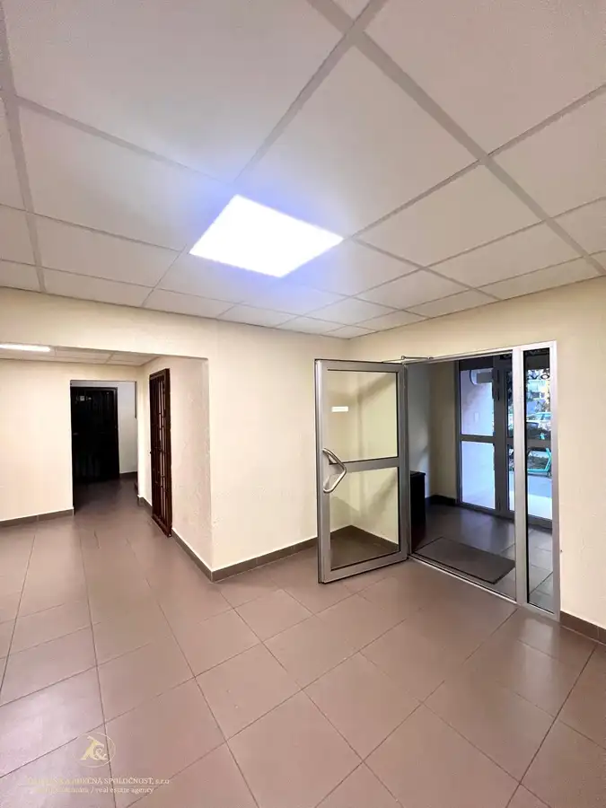
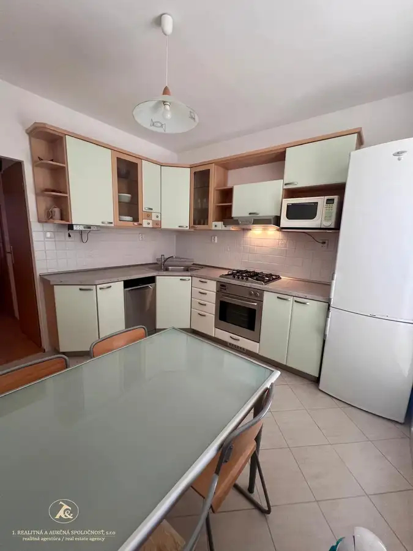
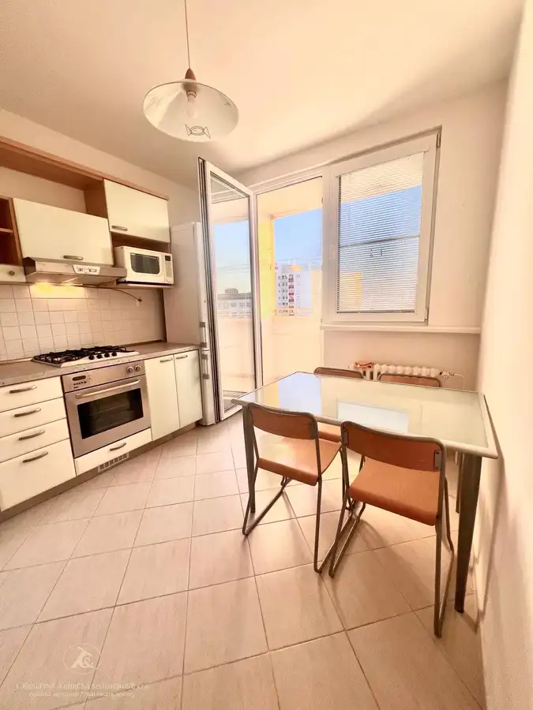
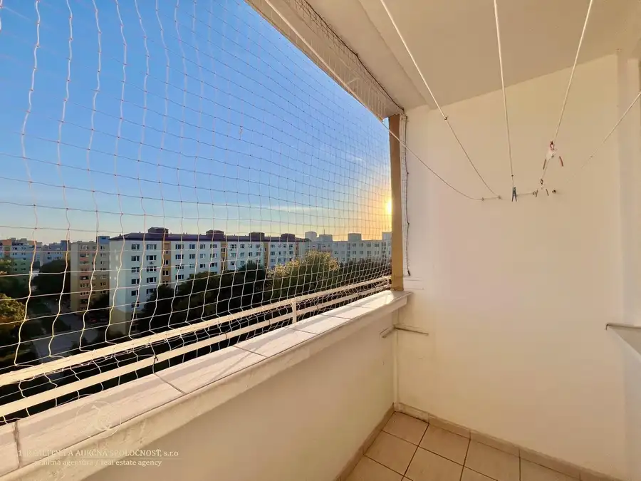
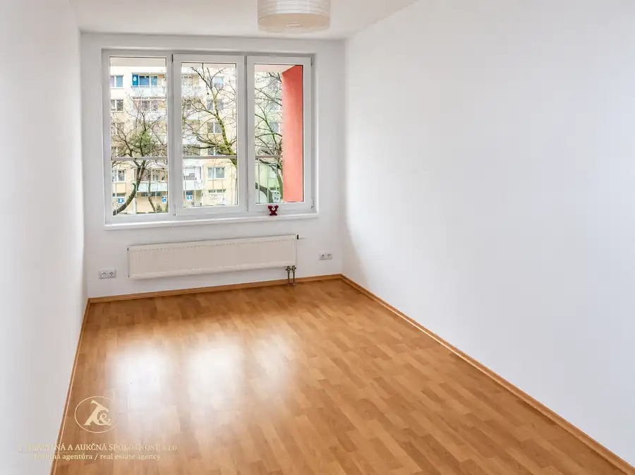
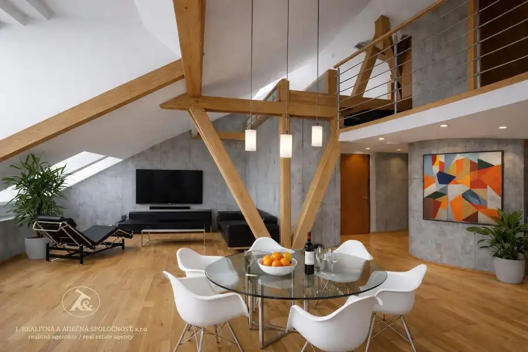
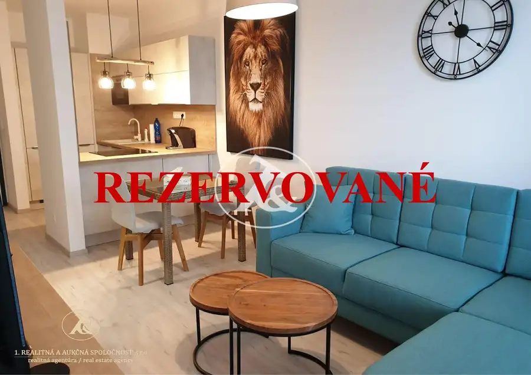

Slnečný 3-izbový byt na prenájom | Petržalka | výborná lokalita pri Auparku
Petržalka, Bratislava






- Dispozícia3-izbový
- Plocha72 m²
- Poschodie8.
- StavKompletná rekonštrukcia
- VlastníctvoOsobné
O nehnuteľnosti
3-IZBOVÝ ZARIADENÝ BYT NA DLHODOBÝ PRENÁJOMPifflova ulica – Bratislava, Petržalka | slnečný byt | 8. poschodie | loggia | krásne výhľady.Ponúkame na dlhodobý prenájom príjemný, slnečný a kompletne zariadený 3-izbový byt na Pifflovej ulici v Bratislave – Petržalke. V byte sú 3 samostatné nepriechodné izby a veľká spoločná vstupná hala a samostatná kuchyňa s výstupom na loggiu.Byt je aktuálne voľný a pripravený na okamžité nasťahovanie. Je vhodný najmä pre rodinu, prípadne pre slušných a zodpovedných študentov.Byt sa nachádza na najvyššom, 8. poschodí bytového domu s výťahom, vďaka čomu ponúka príjemný nadhľad, dostatok denného svetla a pekné výhľady. Orientácia bytu na dve svetové strany zabezpečuje príjemnú svetelnosť a vetranie počas celého dňa.DISPOZÍCIA A VYBAVENIE:Priestranná vstupná hala - Po vstupe do bytu vás privíta veľká a prakticky riešená vstupná hala s dostatkom odkladacieho priestoru. Ponúka pohodlné miesto na uloženie oblečenia, obuvi a ďalších osobných vecí.Obývacia izba -dominantou bytu je svetlá a príjemne presvetlená obývacia izba s pekným výhľadom. Večer si môžete vychutnať pohľad na západ slnka a večernú atmosféru osvetlenej Petržalky. Obývacia izba je zariadená tak, aby poskytovala komfortný priestor na oddych, sledovanie televízie, posedenie či spoločné chvíle s rodinou.Spálňa- spálňa poskytuje príjemné a pokojné miesto na oddych. Je vybavená manželskou posteľou a úložným priestorom, pričom jej poloha vytvára príjemné podmienky na nerušený spánok a relax.Detská / študentská izba- samostatná izba je zariadená s ohľadom na potreby mladého študenta – ponúka priestor na spánok, učenie aj uloženie osobných vecí.Kuchyňa s výstupom na loggia -kuchyňa je prakticky vybavená a poskytuje všetko potrebné na bežné každodenné fungovanie domácnosti. Veľkou výhodou je priamy výstup na loggiu, ktorá môže slúžiť ako príjemné miesto na rannú kávu, večerný relax, pestovanie byliniek či kvetov, ale aj ako praktický priestor na sušenie bielizne.Kompletne vybavená domácnosť:Byt sa prenajíma zariadený a vybavený, aby sa nový nájomník mohol nasťahovať bez potreby dokupovania základného vybavenia.K dispozícii je okrem iného: práčka, žehlička, žehliaca doska, sušiak na bielizeň, upratovacie pomôcky, všetky kuchynské spotrebiče a príslušenstvo, vybavenie potrebné na bežné fungovanie domácnosti.Byt je tak pripravený na komfortné každodenné bývanie.LOKALITA – Pifflova ulica, PETRŽALKAPifflova ulica sa nachádza v staršej, etablovanej časti Petržalky – v lokalite Dvory, ktorá má veľmi dobrú občiansku vybavenosť a zároveň výbornú dostupnosť do centra Bratislavy. Veľkou výhodou lokality je kombinácia kompletných služieb, zelene, možností športu a oddychu a zároveň rýchlej dostupnosti do centra mesta. V bezprostrednom okolí sa nachádzajú obchody, služby, škôlky, školy, detské ihriská a možnosti každodenného nákupu. Priamo na Pifflovej ulici sa nachádza aj Materská škola Pifflova 10. Pifflova patrí do školského obvodu Základnej školy Černyševského 8. Na bežné nákupy sú v okolí dostupné menšie potraviny a služby, väčší výber obchodov a služieb ponúka Aupark, ktorý sa nachádza v blízkosti začiatku Petržalky. Petržalka má zároveň širokú sieť obchodov, supermarketov a nákupných centier.Relax, šport a príroda : Veľkým benefitom bývania v tejto časti Petržalky je blízkosť Sadu Janka Kráľa, jedného z najvýznamnejších historických parkov Bratislavy, ktorý leží medzi Novým a Starým mostom v bezprostrednej blízkosti Auparku. Okolie ponúka možnosti na prechádzky, beh, bicyklovanie, oddych a trávenie voľného času v prírode. Výhodou je tiež blízkosť dunajského nábrežia a cyklotrás. Výborná dostupnosť do mest Poloha je veľmi vhodná aj pre ľudí, ktorí pracujú alebo študujú v centre Bratislavy. Petržalská električková trať je v plnej prevádzke od leta 2025 a prepája Petržalku s centrom mesta. V Petržalke sú k dispozícii električkové zastávky napríklad Jungmannova, Gessayova, Zrkadlový háj, Pajštúnska či Farského, s nadväznosťou na ďalšie linky MHD.Výhodou Pifflovej ulice je teda najmä poloha na začiatku Petržalky – s rýchlym napojením smerom do Starého Mesta, zároveň však s kompletnou občianskou vybavenosťou priamo v okolí.CENA A PODMIENKY PRENÁJMUNájomné: 700 € / mesiac+Náklady spojené s bývaním: 260 € / mesiacV nákladoch sú zahrnuté:elektrina, voda, plyn, správa a údržba bytového domu, odvoz komunálneho odpadu, TV, internet.CELKOVÁ MESAČNÁ PLATBA: 960,- EURNájomné a súvisiace náklady sa uhrádzajú vopred na nasledujúci mesiac.Pri podpise nájomnej zmluvy sa hradí:1 × mesačné nájomné ako vratná kaucia1 × mesačné nájomné ako provízia realitnej kancelárieBYT JE AKTUÁLNE VOĽNÝMajitelia preferujú dlhodobý prenájom a hľadajú zodpovedných a slušných nájomníkov.Ideálne rodina, prípadne slušní a zodpovední študenti.Domáce zvieratá nie sú preferované.Byt je pripravený na bývanie a ponúka príjemné spojenie komfortného zariadenia, praktickej dispozície, krásnych výhľadov a výbornej petržalskej lokality s dobrou dostupnosťou do centra Bratislavy.v pípade obhliadok kontaktujte makléra:Mgr. Lívia Hološová+421 908769429livia.holosova@realitna.sk
Parametre
- Cena vrátane energií
- Nie
- Druh
- 3 izbový byt
- Dátum zverejnenia
- 07. 10. 2026
- Energetická náročnosť
- Z klasických materiálov
- Energetický certifikát budovy
- nie je
- Energie
- 260
- Plocha lodžie
- 3.6 m²
- Podlažie
- 8
- Počet izieb / miestností
- 3
- Rok kolaudácie
- 1986
- Rok poslednej rekonštrukcie
- 2025
- Stav nehnuteľnosti
- Kompletná rekonštrukcia
- Typ
- Prenájom
- Typ konštrukcie
- Panelová
- Umiestnenie
- Posledné podlažie
- Vlastníctvo
- Osobné
- Vybavenie
- Lodžia, Verejné parkovanie
- Vykurovanie
- Ústredné
- Zariadenie
- Zariadené kompletne
- Úžitková plocha
- 72 m²
Kde to je


Mohlo by Vás zaujímať

BytNové 257 500 €Atraktívny 2-izbový byt v Ružinove – ideálny na bývanie aj investíciu Ružinov, Bratislava 2-izbový69 m²2. podlažie
BytNové 390 000 €Veľkorysý byt vhodný pre rodinu aj prácu z domu Staré Mesto, Bratislava 4-izbový125 m²6. podlažie
BytNové 226 000 €Novostavba bytu -Slnečnice mesto - BA -Petržalka Petržalka, Bratislava 2-izbový60 m²1. podlažie